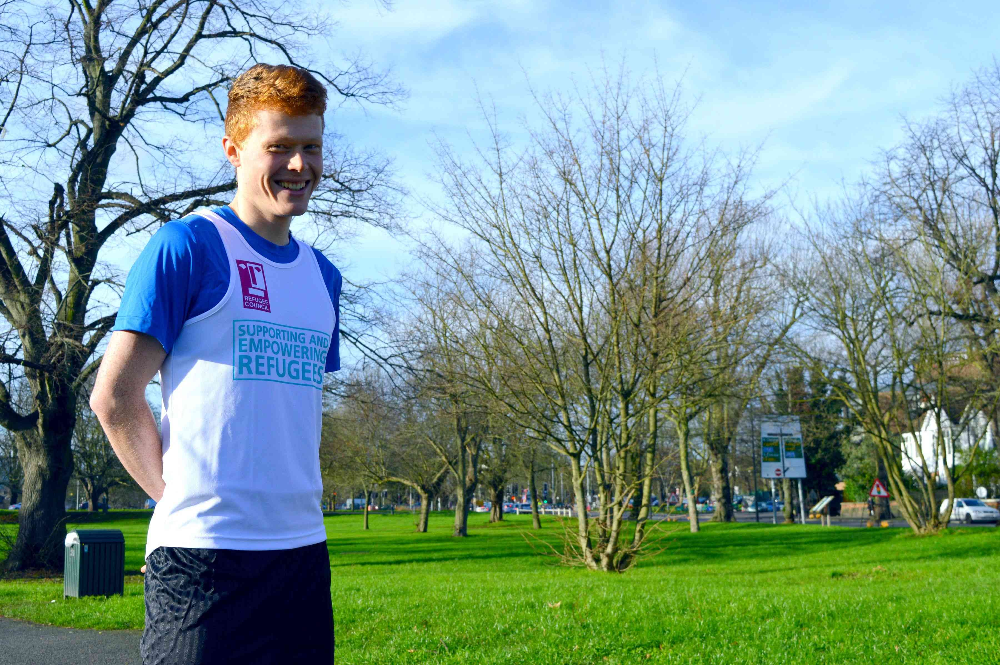

Hi, I'm Matt
Hi, I’m Matt George, founder of Running for Refugees. I have worked for the Organising Committees for the Olympic, Paralympic and Commonwealth Games, and most recently for Sport Relief. I am also studying for a degree in sport, fitness and coaching from the Open University and coach an under-9 football team.
I have enjoyed running and a wide variety of sports from an early age and have completed several half marathons. I have always been attracted to the challenge of long distance running and have started a comprehensive training programme.
The Charity
Asylum seekers and refugees have been in the news regularly over the last year and sadly the crisis doesn’t seem likely to end anytime soon. Having become frustrated with the negative portrayal of asylum seekers and refugees and the lack of compassion that is sometimes shown towards them, I and the project team wanted to do something to help. Together, the project team decided to support and promote the brilliant work the Refugee Council does to support people seeking asylum, assist refugees to find employment and gain stability with their lives. Running for Refugees was born.
The Team
Helping me through this project is an awesome team:
{% include team-member.html
image="../images/jacqui.jpg"
name="Jacqui - Fundraiser"
description="Being Matt’s mum is just the tip of the iceberg! As well as having a wealth of knowledge in the charity sector, Jacqui loves to travel and is pretty handy with a watercolour brush too."
%}
{% include team-member.html
image="../images/will.jpg"
name="Will - General Project Hero"
description="Will loves the outdoors and is currently a Park Ranger in Edinburgh. As Matt’s eldest brother, Will’s sporting passion inspired Matt to follow in his footsteps."
%}
{% include team-member.html
image="../images/courtney.jpg"
name="Courtney - Logistics"
description="All round events maestro with British Rowing, Courtney loves her travel and the great outdoors. Being a kiwi means sport is also held in high regard!"
%}
{% include team-member.html
image="../images/jo.jpg"
name="Jo - Logistics"
description="Another events professional and all round sport lover. The only team member to be working remotely as she soaks up the sun in Melbourne, Australia!"
%}
{% include team-member.html
image="../images/naman.jpg"
name="Naman - Video Wizard"
description="When Matt called for a video editor on a volunteer website, Naman answered! As a video technician for the University of West London, his help and expertise have been invaluable."
%}
{% include team-member.html
image="../images/tom.jpg"
name="Tom - Techie"
description="Cycling fanatic, code geek & pianist."
%}
Sponsors
Big thanks to our sponsors! If you’re interested in sponsoring the project, I’d love to chat. Email me at matt@runningforrefugees.co.uk.
{% include team-member.html
image="../images/mizuno.jpg"
name="Mizuno Clothing"
description="Serious running is helped by serious running shoes. A big thank you to Mizuno who have generously donated the shoes needed for the challenge."
%}
{% include team-member.html
image="../images/injury_active.jpg"
name="Injury Active Clinic"
description="Injury Active Clinic will be providing me with all of my physio needs between now and the challenge. It is a massive relief to have such brilliant professional people look after me!"
%}
Supporters
Huge thanks goes to everyone who has supported the project and donated so far. Special thanks to:
- Bassil Shippam & Alsford Trust